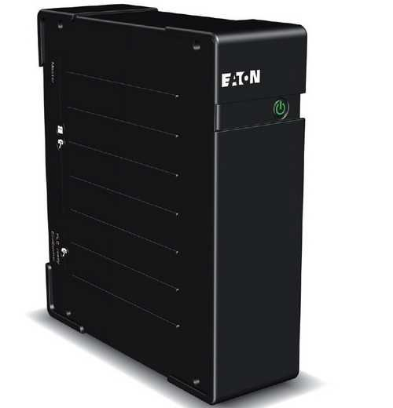
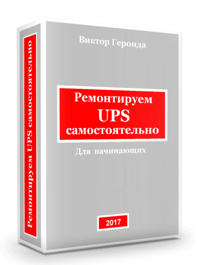
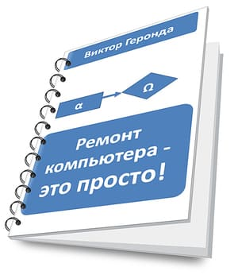

Вы пользуетесь источником бесперебойного питания?
Правильно делаете!

ИБП (или UPS, UninterruptiblePowerSupplies) – это устройство, которое поможет вам сохранить информацию в компьютере при исчезновении сетевого напряжения.
И вы будете спокойны за ваши проекты, фотографии любимых и отснятые в отпуске пейзажи.
Но есть одна проблема...
Источник бесперебойного питания – это сторож и «цепной пес» для компьютера. Но это такое же электронное устройство, как компьютер, принтер или сканер. И так же может ломаться. Бывает так, что самому «спасателю» нужна помощь.
Поломка любого электронного устройства или гаджета вызывает стрессовое состояние – ведь надо быстро принимать меры! Любая неисправность – всегда не вовремя. Надо срочно искать мастерскую и толкового мастера...
Но не спешите отчаиваться!
Во многих случаях неисправности UPS можно достаточно просто устранить самому!
В этом вам поможет моя книга «РемонтируемUPS самостоятельно»

Для начала давайте познакомимся.
Меня зовут Виктор Геронда, я более 20-ти лет занимаюсь ремонтом и обслуживанием компьютеров и периферийных устройств. Моему сайту «Компьютер и жизнь» более 5-ти лет.
Те, кто раньше посещал мой сайт и читал книгу «Ремонт компьютера – это просто», видели, что о сложном я рассказываю просто и увлекательно. В ней было большое количество авторских фотографий и графических материалов.
В таком же стиле написана и книга «Ремонтируем UPS самостоятельно».
Как профессионал, могу сказать, что во многих случаях устранение неисправностейUPS не является сложной задачей. Книга написана на основе большого практического опыта.
Когда я начинал свою ремонтную деятельность, мне очень не хватало толковых книг именно по ремонту. Теперь ситуация изменилась, и одна из таких книг – перед вами. Вы можете стать профессионалом гораздо быстрее, чем я!
Что вас ждет в книге?
- Краткое описание о том, как устроен ИБП, три различных класса ИБП.
- Как выполнить начальную диагностику ИБП, выявить проблемы.
- Как проверить аккумулятор и его зарядку.
- Как проверить и «вылечить» переключающие реле.
- Как работает варисторная защита ИБП.
- Как проверить и правильно заменить предохранители и варисторы.
- Как и зачем нужно проверять пайки на печатной плате.
- Как работают полевые транзисторы, и где они используются в UPS.
- Как проверить полевые транзисторы тестером и схемой для проверки.
- Как правильно заменить полевой транзистор.
- Какие еще могут быть неисправности UPS.
- Как правильно паять.
- Ресурсы сети интернет (сайты и форумы) по электронике и ремонту.
- Примеры даташитов (справочных данных) из зарубежных каталогов.
Вас ждут два бонуса
Содержание книги «Ремонт компьютера – это просто!»

- Как почистить компьютер от пыли. 3 способа.
- Как устроены вентиляторы в компьютере, как их смазать.
- Как отремонтировать материнскую плату компьютера.
- Как отремонтировать блок питания компьютера.
- Как отремонтировать компьютерную «мышь».
- Что такое диод, как его проверить.
- Что такое биполярный транзистор, как его проверить.
- Как правильно заменить полупроводниковые приборы.
- Как устроены аккумуляторы в UPS.
- Как проверить и восстановить аккумуляторы в UPS.
Сколько стоит книга?
Есть два варианта комплектации, вы можете выбрать наиболее подходящий для Вас
Базовый
Оптимальный
Книга «Ремонт ПК – это просто» отлично дополняет книгу «Ремонтируем UPS самостоятельно», так как в ней описана процедура восстановления аккумуляторов UPS.
Прочитав книги и применив полученные знания на практике, вы победите страх перед сложными «железками» и сэкономите немалую сумму денег.
Вам не нужно будет обращаться по каждому поводу в ремонтную мастерскую и тратить на это ваше время!
Это разумный подход – изучить книги, научиться устранять простые неисправности самостоятельно, и только сложные случаи оставить профессионалам.
Сделайте первый шаг к тому, чтобы стать профессионалом!
Цена книг в любой момент может повыситься без предупреждения.